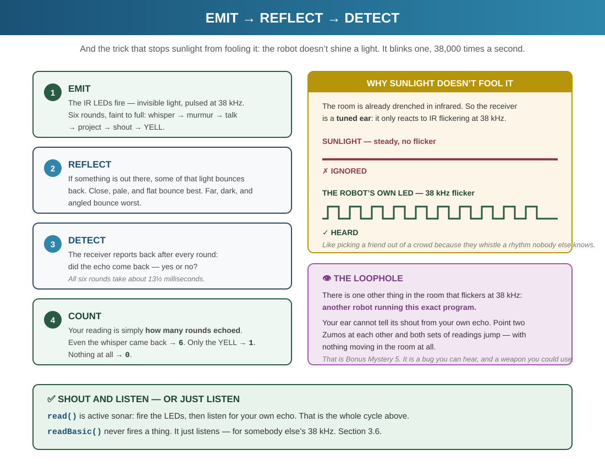
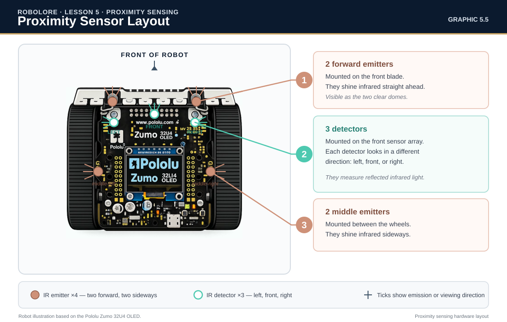
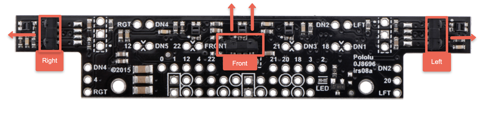
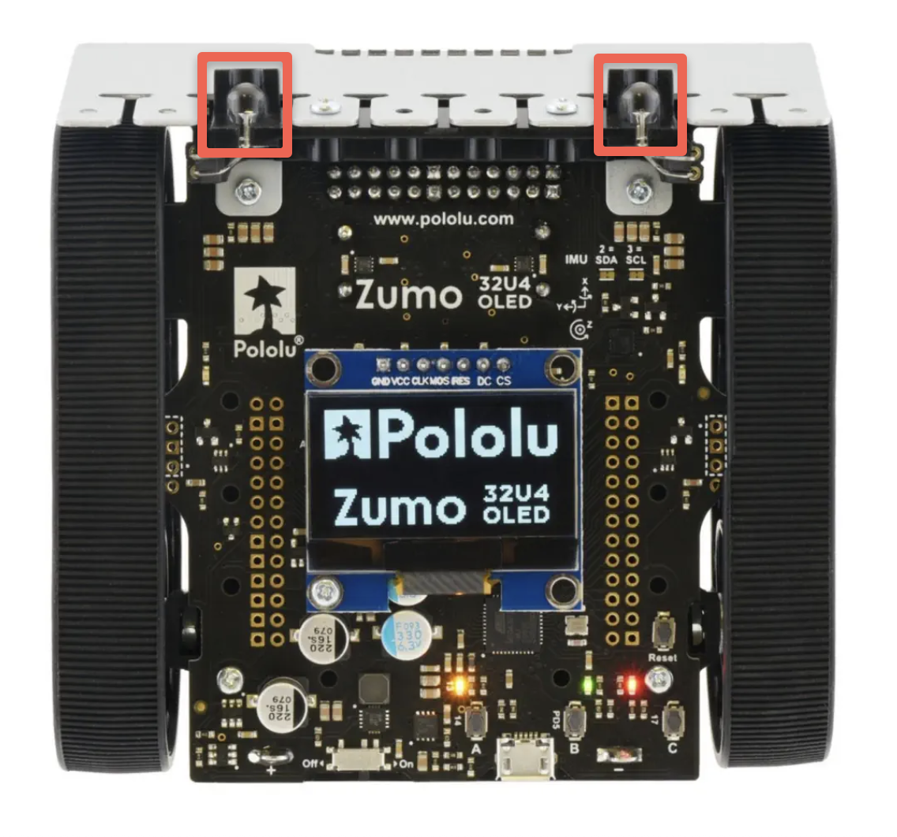
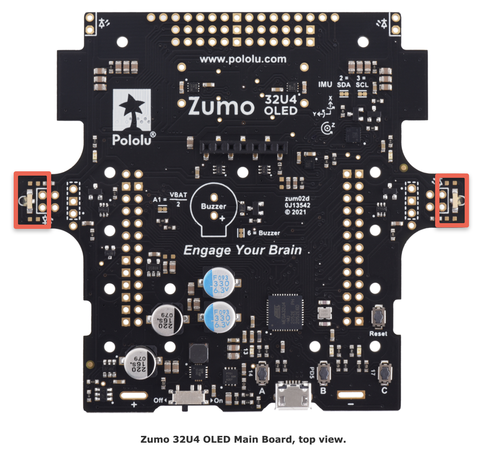
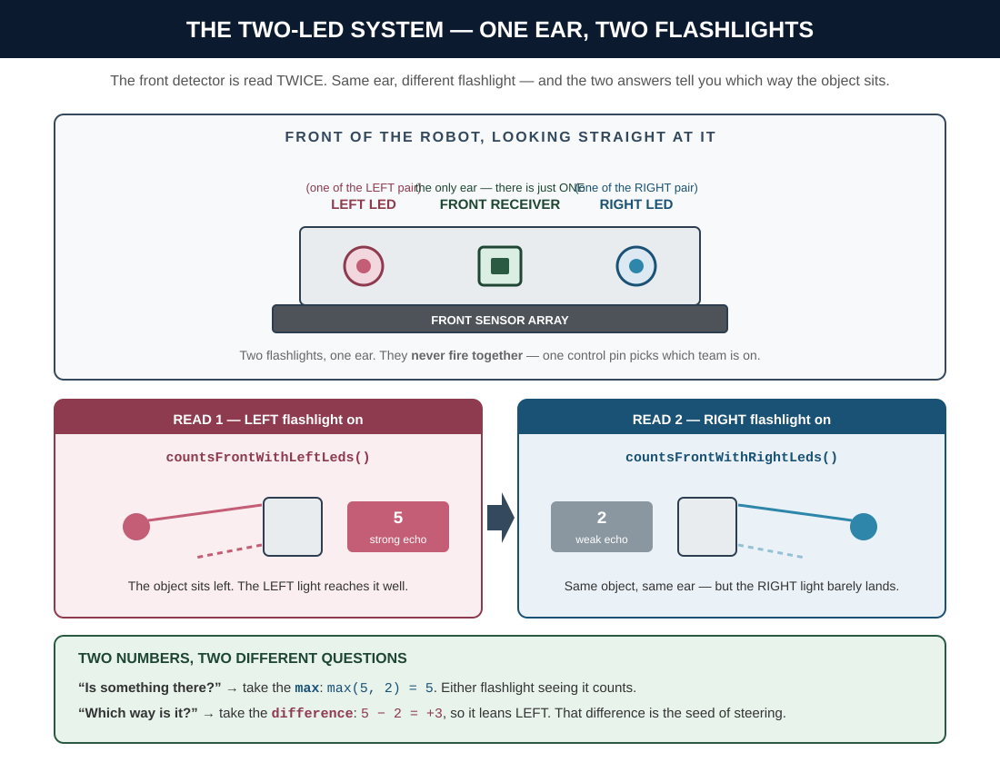
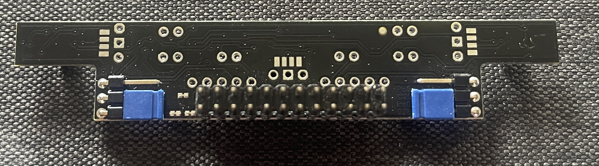
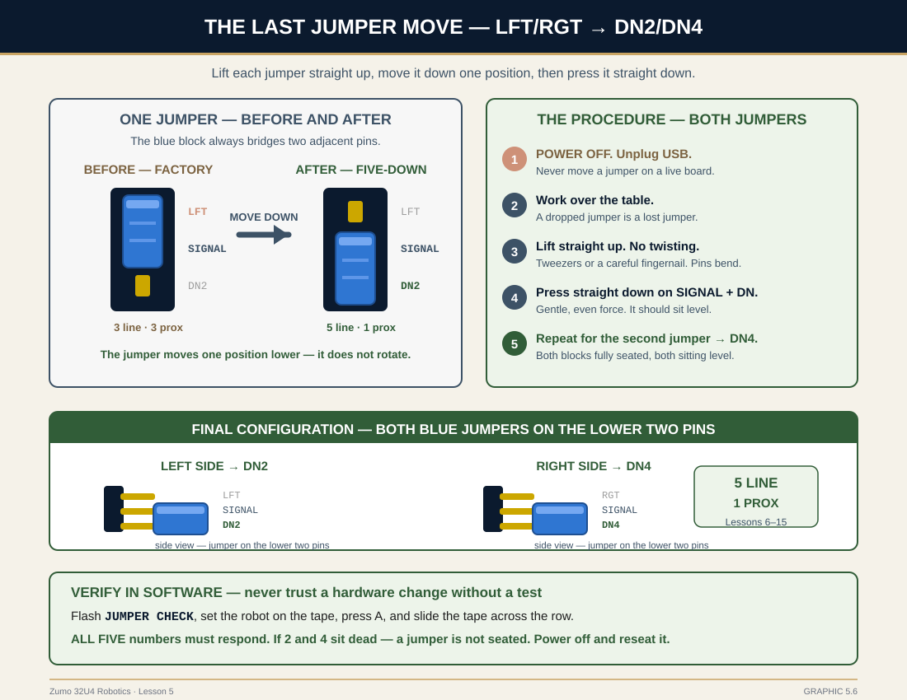
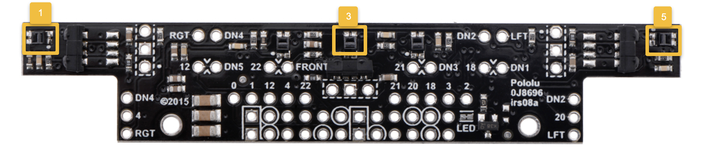
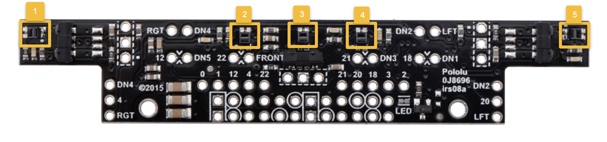

Imagine walking through a dark room. You can't see the furniture, but you can feel when your hands get close to something—even before touching it. You sense the object's presence somehow.
Your robot doesn't have eyes, but it can detect objects around it — ahead of it, and out to either side. The Zumo 32U4 has infrared proximity sensors that work on the same principle as a bat’s echolocation or a ship’s sonar — send out a signal, then measure what bounces back. The bat uses sound and the ship uses sound; your robot uses invisible light.
🤖 Real-World Connection
Proximity sensors are everywhere:
Car parking sensors — Beep faster as you get closer to obstacles
Automatic doors — Open when you approach
Robot vacuums — Avoid furniture and walls
RoboCup Soccer robots — Detect the ball and other robots
Today, you'll add this "sixth sense" to your Zumo!
NOTE
"Object" vs "Obstacle"
Throughout this lesson, we'll use the word object to mean anything the sensor detects. When we specifically mean something the robot should avoid, we'll say obstacle.
WARNING
HEADS UP — today ends with a permanent hardware change
Your robot is sitting in the factory jumper position right now — three line sensors, three proximity receivers. That is exactly what this lesson needs, and it is why Lesson 4 made you put the jumpers back.
But it is the last time. In Section 7.3 you will move those jumpers to DN2/DN4 for good, trading your left and right proximity receivers for line sensors 2 and 4. Read that section before you pack up — Lesson 6 will not work without it.
[GRAPHIC 5.1] Three detectors, three directions. FRONT looks ahead — a hand close in reads F:6. LEFT and RIGHT look out of the flanks, not forward: a wall running alongside reads L:2, an open right side reads R:0. None of that light is visible to you.
The Zumo's proximity sensors use infrared (IR) light—light that's invisible to human eyes but perfect for detection:
EMIT: The robot pulses IR LEDs (like tiny flashlights)
REFLECT: If an object is nearby, IR light bounces back
DETECT: Sensors measure how much light returns
CALCULATE: More reflected light = closer object
There's a trick hiding in step 1. The room is already full of infrared — sunlight is drenched in it, and so are incandescent bulbs. If the receiver listened for any IR, it would see objects everywhere. So the Zumo doesn't just shine its LEDs; it blinks them about 38,000 times per second, and the receiver is a tuned ear that only reacts to light flickering at that exact rhythm. Steady sunlight? Ignored. Room lights? Ignored. Only its own echo — or another robot's 38 kHz pulses — gets through.
It's like picking out a friend in a loud crowd because they whistle a rhythm nobody else knows. The crowd noise never stops, but nothing in it matches the pattern your ear is tuned for.

[GRAPHIC 5.2] EMIT → REFLECT → DETECT → COUNT — and the 38 kHz trick that makes steady sunlight invisible to the receiver.
NOTE
Think of it like shining a flashlight in a dark room. A nearby wall reflects lots of light back to your eyes. A wall far away reflects much less. The sensors work the same way!
3.2 Understanding the 0-6 Brightness Scale
Here's something important that confuses many beginners:
WARNING
CRITICAL!
The Zumo proximity sensors return values 0 to 6, NOT 0 to 255! These are "brightness levels"—the sensor pulses the IR LEDs at increasing brightness and counts how many levels detected a reflection.
Here's what actually happens inside one read(): the robot runs six rounds of pulses, starting faint and getting stronger — think whisper, murmur, talk, project, shout, YELL. After each round it checks: did the echo come back?
The value you get is how many rounds produced an echo. A very close object bounces back even the whisper — all six rounds land, and you read 6. A distant object only bounces back the yell — one round lands, and you read 1. Nothing comes back at all — 0. The whole six-round conversation takes about 13½ milliseconds, fast enough to run over and over inside loop() without the robot ever feeling slow.
Value
Meaning
Approximate Distance
0
No detection
Nothing nearby (or dark/small object)
1-2
Object detected (far)
~20-30 cm away
3-4
Object close
~10-20 cm away
5-6
Object very close
Less than 10 cm
These distances are rough guides — actual readings vary with object color, size, and angle (see Section 4.3). Calibrate against your own robot.
KEY TERM: Brightness Level
A measure (0-6) of how many IR LED pulses at increasing intensity detected a reflection. Higher = closer object.
3.3 Threshold Constants
We use named constants to make our code readable and easy to adjust:
constint DETECTION_THRESHOLD = 1; // Minimum value = "something is there"constint CLOSE_THRESHOLD = 3; // Object is getting closeconstint VERY_CLOSE_THRESHOLD = 5; // Object is very close!
KEY TERM: Threshold
A boundary value used to make decisions. Values above trigger one action; values below trigger another.
3.4 Two Flashlights, Three Ears
The four emitter LEDs are not four independent flashlights. They're wired as two teams: a LEFT pair (the forward-left LED on the blade plus the middle-left LED between the wheels) and a RIGHT pair (their mirror twins). One control pin picks which team fires — they never fire together.
That's the secret decoder ring for the long function names. countsFrontWithLeftLeds() reads as: the FRONT ear, listening while the LEFT flashlight team was on. "Front" names the ear; "WithLeftLeds" names the flashlight. Every one of the counts functions follows the same grammar.
And that's why one read() hands you two numbers per sensor: the library runs the full whisper-to-yell sequence once with the left team, then once with the right team, and every ear takes notes both times.
Why they are teams and not four switches. The front-left LED and the middle-left LED are wired in series — one current path, so lighting either one lights both. Same for the right pair. That is not a software choice you could change; it is a wire. It also means the side detector is being helped by the blade LED and the front detector is being helped by the side LED, every single time a team fires. The emitters flood; the direction you get back comes from which detector answers.
3.4a The Dead Spot Between Them
Three cones do not add up to a circle. FRONT covers about ±19° of your nose and each side detector covers a wedge centered straight out the flank — which leaves two blind wedges, roughly 19° to 72° off each side, where no detector is aimed. Pololu measured this and calls it a significant dead spot between the front sensor and each side sensor.
[GRAPHIC 5.7] Between “ahead” and “beside” there is a wedge nothing is watching. The consequence is the strip on the right: see it on the left, turn to face it, and it vanishes mid-turn.
WARNING
a reading that drops to 0 while you are turning toward the thing you just detected is not a broken sensor and not a bug in your code. Nothing is aimed there. Design around it: remember what you saw and keep turning rather than re-testing every frame. Lesson 10 leans on exactly this dead spot — by then the five-down jumper move has taken your side receivers away, so the blind region starts at about 19° off your nose and never closes.
3.5 A Proximity Sensor Is Not a Ruler
Brightness counts measure echo strength, not distance. A big white box at 25 cm can out-echo a small black cup at 10 cm — more surface, better reflector, stronger echo, higher count. The sensor isn't lying; it's answering a different question than "how far?"
For the same object, though, the counts track distance beautifully — closer is always higher. That's why thresholds work so well in practice, and it's also why the distance table in Section 3.2 says "approximate" and why Section 4.3 lists the factors. When a project cares about a specific object, test against that object and pick thresholds from what you observe, not from the table.
3.6 Hearing Without Shouting
read() is active sonar — shout, then listen for your own echo. It has a quiet cousin: readBasic() never fires the LEDs at all. It just listens for 38 kHz pulses that someone else is emitting.
Someone else — like the robot on the next desk running this very program. Its 38 kHz shouts are, to your receiver, indistinguishable from your own echoes. In a sumo ring that cuts both ways: you could hear an opponent who is actively hunting for you, without ever switching your own lights on and revealing yourself. Today’s program doesn’t use readBasic(), and this book never comes back to it — but you can prove the effect yourself in ten seconds, and Observation Experiment 5 shows you how.
The Zumo 32U4's proximity system has two parts. Three detectors sit on the front sensor array, each facing a different direction — LEFT, FRONT, and RIGHT. Four IR emitter LEDs live on the main board: two forward-facing LEDs mounted on the front blade (the clear domes you can see), and two middle LEDs on the sides between the wheels that shine left and right.

[GRAPHIC 5.5] The whole system, from above. Four emitters wired as two teams — one blade LED and one middle LED per side — and three detectors, each aimed a different way: LEFT out the flank, FRONT up the nose, RIGHT out the other flank.
Key insight: the detectors see reflections — but they do not see direction. Because each side's two emitters are wired in series (§3.4), firing a team floods a wide area, so a strong return tells you something is out there without telling you where it is. Direction comes from which detector answers: an object out your left flank reads on LEFT because LEFT is the only detector aimed there. The one place the LED team does carry direction is the front detector, read twice — that is §4.2.

[IMAGE 5.6] Why “left” and “right” mean sideways. FRONT looks straight ahead. The two outer receivers look out of the sides of the robot — not forward-left and forward-right. Something just off your nose is still FRONT’s business; LEFT and RIGHT are watching your flanks. Photo: Pololu, annotated.
Where the four emitters actually are. Two you can see, two you cannot:

[IMAGE 5.7] The forward pair — the clear domes on the blade, in their protective holder. Assembled robots ship with the wide-angle (50°) clear LEDs. Photo: Pololu, annotated.

[IMAGE 5.8] The middle pair, on the bare board — surface-mounted at the outer edges, aiming straight out. On your robot they are hidden inside the tracks, which is why you have never seen them. Note the A1 = VBAT/2 silkscreen just inboard: A1 is the pin that picks which LED team fires. Photo: Pololu, annotated.
4.2 The Two-LED System
Notice there are two LEDs on each side. The library reads the front detector twice:
countsFrontWithLeftLeds() — Front detector lit by LEFT side LEDs
countsFrontWithRightLeds() — Front detector lit by RIGHT side LEDs
If an object is slightly left of center, the LEFT-team reading will be higher. We combine them with max() to detect objects regardless of their exact position — “slightly” meaning inside FRONT's own ±19°. Past that you are in the dead spot of §3.4a, and no amount of combining will find the object.

[GRAPHIC 5.3] One ear, two flashlights. The same front detector, read once with the LEFT LED (5) and once with the RIGHT (2) — same object, two answers.
4.3 What Affects Detection?
Factor
Better Detection
Worse Detection
Object Color
White, light colors
Black, dark colors
Object Size
Large surfaces
Small or thin objects
Surface Texture
Smooth, matte
Glossy (reflects away) or fuzzy
Angle
Perpendicular to sensor
Angled away
4.4 Set Up Your Project
DO THIS NOW — Start a New Lesson (same ritual as always)
Open the ZUMO Project Maker → confirm Lesson 05 — Main lesson build, click Download.
Unzip and drag the LastName_L05 folder into Documents/PlatformIO/Projects.
VS Code: File → Open Folder → your new folder (close Lesson 4's folder first).
Check the header comment the Maker pre-filled, then Build (✓) — healthy before you write a line.
No internet? Copy your ZUMO_Template, rename it LastName_L05 by hand — and paste in the STANDARD HELPERS block from Section 5.14 (the Maker adds it automatically; the plain template doesn't have it).
Scroll to the bottom of the fresh main.cpp before you move on. The STANDARD HELPERS block that arrived in Lesson 4 is there again — waitForStart() and checkBattery(), plus their two lines up in FUNCTION PROTOTYPES. It ships with every Maker project now. Today's program leans on both; Section 5.14 is the refresher.
CHECKPOINT — Section 4 complete when:
☐ You can point to all three proximity receivers (left, front, right) on the sensor array
☐ You can point to the four emitter LEDs and say which team — LEFT pair or RIGHT pair — each belongs to
☐ LastName_L05 project created, STANDARD HELPERS block present, Build shows ✓
Below is the complete program that displays real-time proximity readings with three switchable display modes and parking-sensor style audio feedback. Study each section, then in Section 6 you'll build it step by step.
5.1 Program Header & Includes
/*
=====================================================
LESSON 5 - Proximity Sensors
=====================================================
PURPOSE:
Test and understand the three proximity sensors.
Display readings and detect objects in front and sides.
BUTTONS:
A → press once at boot to start (safety gate)
Then, while running:
A (Left) → Show numeric values mode
B (Center) → Show bar graph mode
C (Right) → Show detection alerts mode
A + B held → battery check (STANDARD HELPERS)
READINGS:
Values 0-6 (brightness levels) where:
- 0 = nothing detected
- 1-2 = object detected (far)
- 3-4 = object close
- 5-6 = object very close
HARDWARE:
- Zumo 32U4 proximity sensors, OLED, buttons, buzzer
AUTHOR: [Your Name]
DATE: [Today's Date]
=====================================================
*/
#include <Zumo32U4.h>
// ===== CONSTANTS =====constint DETECTION_THRESHOLD = 1; // Minimum to count as "detected"constint CLOSE_THRESHOLD = 3; // Considered "close"constint VERY_CLOSE_THRESHOLD = 5; // Considered "very close"
5.4 Global Variables
// ===== GLOBAL VARIABLES =====int leftValue = 0;
int frontLeftValue = 0;
int frontRightValue = 0;
int frontValue = 0;
int rightValue = 0;
int displayMode = 0; // 0 = numeric, 1 = bars, 2 = alerts
5.5 Function Prototypes — The Order-Proof Trick
The compiler reads main.cpp top to bottom, and it refuses to call a function it hasn't heard of yet. You've hit that wall twice on purpose — Lesson 2 Step 7, Lesson 4 Step 5 — and both times the fix was the same: a prototype, one line near the top that promises the compiler "this function exists; details below."
Today's program has six helpers, and the display functions call each other (showBarGraphMode() calls drawBar()). With prototypes declared once, up top, the helpers can live in any order and everything still builds:
// ===== FUNCTION PROTOTYPES =====void readAllSensors();
void drawBar(int row, int value);
void showNumericMode();
void showBarGraphMode();
void showAlertMode();
void updateIndicators();
// (these two are pre-installed by the Maker)void waitForStart();
void checkBattery();
The Maker skeleton already carries the last two — they came pre-installed with the STANDARD HELPERS block. The six above them are yours to add today.
In older, prototype-less programs this function had to sit aboveshowBarGraphMode() or the build went red. Not in ours: its line in FUNCTION PROTOTYPES (Section 5.5) means the compiler already knows it exists, so helpers can live in any order. The prototype is doing quiet work here.
void drawBar(int row, int value) {
display.gotoXY(2, row);
int barLength = constrain(value, 0, 6);
for (int i = 0; i < 6; i++) {
if (i < barLength) {
display.print(F("#"));
} else {
display.print(F("-"));
}
}
display.print(F(" "));
display.print(value);
}
void updateIndicators() {
// LED: On if anything detected in frontif (frontValue >= DETECTION_THRESHOLD) {
ledYellow(1);
} else {
ledYellow(0);
}
// Buzzer: Beep pattern based on closeness
static unsigned long lastBeep = 0;
unsigned long beepInterval;
if (frontValue >= VERY_CLOSE_THRESHOLD) {
beepInterval = 100; // Fast beeping
} elseif (frontValue >= CLOSE_THRESHOLD) {
beepInterval = 300; // Medium beeping
} elseif (frontValue >= DETECTION_THRESHOLD) {
beepInterval = 600; // Slow beeping
} else {
beepInterval = 0; // No beeping
}
if (beepInterval > 0 && millis() - lastBeep > beepInterval) {
buzzer.playNote(NOTE_C(5), 30, 15);
lastBeep = millis();
}
}
static — one keyword, two different jobs. There is a word in that function you have not met: static unsigned long lastBeep. This is one of those cases, like const and constrain() back in Lesson 3, where the same spelling does two unrelated things depending on where you put it. Meet both now so neither one ambushes you later.
static inside a function — the retained local.lastBeep is created once, the first time updateIndicators() runs, and it keeps its value between calls. Write it as a plain unsigned long lastBeep = 0; instead and it would be built fresh and reset to zero on every single pass of loop() — so millis() - lastBeep would always be about zero, the interval test would never pass, and the buzzer would never beep at all. static is what gives a local variable a memory.
static at file scope — the private name. In Lesson 6 you will write static long averageCounts(), and there the word means something else entirely: this function belongs to this file alone, and no other file gets to see it. Nothing is being remembered — that one is about who is allowed to look. Lesson 7 takes it apart properly, once your program is eight files and the question of who can see what actually matters.
Same keyword, two questions. Inside a function it asks does this survive the call? Outside one it asks who is allowed to see this? When you meet static in someone else's code, read where it sits before you read what it says.
5.12 Setup Function
void setup() {
Serial.begin(115200);
delay(500);
Serial.println(F(""));
Serial.println(F("========================================"));
Serial.println(F(" LESSON 5 - PROXIMITY SENSORS"));
Serial.println(F("========================================"));
Serial.println(F(""));
Serial.println(F("CONTROLS:"));
Serial.println(F(" A: Numeric value display"));
Serial.println(F(" B: Bar graph display"));
Serial.println(F(" C: Detection alerts"));
Serial.println(F(""));
Serial.println(F("VALUES: 0-6 (brightness levels)"));
Serial.println(F(" 0 = nothing detected"));
Serial.println(F(" 1-2 = object far"));
Serial.println(F(" 3-4 = object close"));
Serial.println(F(" 5-6 = object very close"));
Serial.println(F(""));
proxSensors.initThreeSensors();
Serial.println(F("Proximity sensors initialized."));
Serial.println(F("Try moving your hand in front of the robot!"));
waitForStart(); // safety gate: nothing runs until you press A
}
Read the last line first. waitForStart() is the safety gate from the STANDARD HELPERS, and it goes at the end of setup(), always — that's the habit from Lesson 4. The robot finishes its setup work, shows "Press A / to start," and freezes until you press it. It's the boot screen now. And since the whole Serial banner prints before the gate, your cheat sheet is already waiting in the Serial Monitor while the robot waits for you.
Today's program doesn't drive any motors — but the habit is unconditional. Challenges 4 and 5 bring the motors back, and by then the gate will already be second nature.
5.13 Loop Function
One new shape appears in the loop below: a switch statement, which picks one of several blocks based on a value — here, which display mode to show. Read it as a stack of if checks that all ask about the same variable; each case is one answer, and break ends it. Copy it as written for now — Lesson 9 takes switch apart properly when the robot needs to choose between intersection types.
void loop() {
checkBattery(); // hold A + B together to see battery millivolts
readAllSensors();
// Button handlingif (buttonA.getSingleDebouncedPress()) {
ledYellow(1); delay(50); ledYellow(0);
displayMode = 0;
Serial.println(F("[MODE] Numeric"));
}
if (buttonB.getSingleDebouncedPress()) {
ledYellow(1); delay(50); ledYellow(0);
displayMode = 1;
Serial.println(F("[MODE] Bar graph"));
}
if (buttonC.getSingleDebouncedPress()) {
ledYellow(1); delay(50); ledYellow(0);
displayMode = 2;
Serial.println(F("[MODE] Alerts"));
}
// Update displayswitch (displayMode) {
case0: showNumericMode(); break;
case1: showBarGraphMode(); break;
case2: showAlertMode(); break;
}
// Update indicators
updateIndicators();
// Serial logging
Serial.print(F("L:"));
Serial.print(leftValue);
Serial.print(F("\tF:"));
Serial.print(frontValue);
Serial.print(F(" ("));
Serial.print(frontLeftValue);
Serial.print(F("/"));
Serial.print(frontRightValue);
Serial.print(F(")\tR:"));
Serial.print(rightValue);
if (frontValue >= VERY_CLOSE_THRESHOLD) {
Serial.print(F("\t*** VERY CLOSE ***"));
} elseif (frontValue >= CLOSE_THRESHOLD) {
Serial.print(F("\t* CLOSE *"));
} elseif (frontValue >= DETECTION_THRESHOLD) {
Serial.print(F("\t(detected)"));
}
Serial.println();
delay(50);
}
New first line: checkBattery() — the other STANDARD HELPER, at the top of loop(), always. Hold A and B together at any moment and the display shows battery millivolts until you let go. Weak batteries cause the weirdest bugs in robotics — flaky readings, random resets — so make the check a reflex before you blame your code.
5.14 The STANDARD HELPERS — Carried Forward
These two arrived in Lesson 4 and now ship at the bottom of every Maker project, with their prototypes pre-installed up top. You don't write them — you call them: waitForStart() at the end of setup(), checkBattery() at the top of loop(). Here is the block in full — this is also the copy source if you ever build a project by hand from the plain template:
// ----- STANDARD HELPERS (added after Lesson 3) -----/*
waitForStart()
--------------
SAFETY GATE: nothing moves until Button A is pressed.
Call it at the END of setup(), always.
*/void waitForStart() {
display.clear();
display.print(F("Press A"));
display.gotoXY(0, 1);
display.print(F("to start"));
buttonA.waitForButton();
display.clear();
delay(500); // time to get your hands clear
}
/*
checkBattery()
--------------
Hold A + B together at any time to see the battery.
Call it at the TOP of loop().
*/void checkBattery() {
if (buttonA.isPressed() && buttonB.isPressed()) {
display.clear();
display.print(F("Battery"));
display.gotoXY(0, 1);
int mv = readBatteryMillivolts();
display.print(mv);
display.print(F(" mV"));
while (buttonA.isPressed() || buttonB.isPressed()) {
// wait for release
}
delay(200);
display.clear();
}
}
TIP
The A+B battery combo works even while you're flipping between display modes — checkBattery() runs before the mode buttons get a look at your fingers. Try it mid-session: hold A+B, read the millivolts, release, and the proximity display picks up right where it left off.
5.15 Coding Concepts: The For Loop, Second Look
Builds on:
the for loop you took apart in Lesson 4, Section 8A .
You already own this tool. In Lesson 4 you used a for loop to walk the sensor array, and Section 8A there pulled it apart into its three parts — START, CONTINUE IF, UPDATE. Nothing below replaces that. This is the second look, and it exists because this lesson asks the loop to do two things Lesson 4 never did: count downward, and draw — a loop whose body decides, character by character, what to put on the screen.
KEY TERM: For Loop
A control structure that repeats code a specific number of times, using a counter variable to track progress.
Worked Example #1: The drawBar() Function
Let's trace through our actual code when value = 4:
for (int i = 0; i < 6; i++) {
if (i < barLength) { // barLength = 4
display.print(F("#"));
} else {
display.print(F("-"));
}
}
Pass
i
LOOP: is i < 6?
IF: is i < barLength (4)?
Prints
Display so far
1
0
Yes — keep going
Yes
#
#
2
1
Yes — keep going
Yes
#
##
3
2
Yes — keep going
Yes
#
###
4
3
Yes — keep going
Yes
#
####
5
4
Yes — keep going
No
-
####-
6
5
Yes — keep going
No
-
####--
—
6
No — loop ENDS
never asked
nothing
####--
NOTE
Two different questions — do not mix them up.
The loop condition (i < 6) decides whether there is another pass at all. The if condition (i < barLength) decides what gets printed on this pass. The loop always runs exactly six times; the if is what changes at position 4.
Result:####-- — Four filled, two empty!
New in Lesson 5: Counting the Other Way
Every loop you have written so far started at 0 and climbed. Nothing requires that. The counter is an ordinary variable and the three parts are yours to set — so a loop can just as easily start high and walk down:
// A 3-2-1 countdown before the robot movesfor (int i = 3; i >= 1; i--) {
display.clear();
display.print(i);
delay(1000);
}
Read the three parts against the ascending version and every one of them flipped:
Part
Climbing up
Counting down
START
int i = 0 — begin at the bottom
int i = 3 — begin at the top
CONTINUE IF
i < 6 — stop when it gets too big
i >= 1 — stop when it gets too small
UPDATE
i++ — add one
i-- — subtract one
The loop prints 3, then 2, then 1, then quits — because on the next lap i is 0 and 0 >= 1 is false. Notice the test is >= and not >: with a plain > the countdown would show 3 and 2 and then stop, and your robot would launch a full second early. One character, one second, one crashed run.
WARNING
the countdown that never counts
Write i++ in a loop that starts at 3 and tests i >= 1 and the counter runs away from its finish line forever — the robot hangs on the number 3 and never moves. When a loop refuses to end, check that UPDATE is walking toward the condition, not away from it.
Worked Example #2: Counting Detections
Count how many sensors detect something:
int sensorValues[] = {leftValue, frontValue, rightValue};
int detectionCount = 0;
for (int i = 0; i < 3; i++) {
if (sensorValues[i] >= DETECTION_THRESHOLD) {
detectionCount++;
}
}
// detectionCount now holds 0, 1, 2, or 3
NOTE
For Loops vs While Loops
For loops are best when you know exactly how many times to repeat (like "do this 6 times" or "count down from 3"). While loops are better for sensor-based conditions where you don't know how many iterations you'll need (like "keep turning until you see the line" or "drive forward until something is detected"). You'll meet the while loop properly in Lesson 6, Section 5.3 — it is the heart of every measured move, driving until the encoders say you have gone far enough.
CHECKPOINT: Ready for Challenges?
I understand the three parts of a for loop (START, CONTINUE, UPDATE)
I can trace through a loop and predict its output
I know that i < 6 means the loop runs 6 times (0 through 5)
I understand that the loop body runs BEFORE i is incremented
BRAIN CHECK 01 · MENTAL KNOWLEDGE CHECK — Answer From Your Head
That is the reading done. Before you point a single sensor at the world, answer these five from your head — no scrolling back, no robot, no help. Then click to compare. If your answer and the reveal disagree, the section number tells you where to re-read.
1. The room is already full of infrared — sunlight especially. Why doesn't it flood every proximity reading? (§3.1)
Because the robot blinks its IR LEDs about 38,000 times per second and the receiver is a tuned ear that only reacts to that rhythm. Steady sunlight has no 38 kHz flicker, so it is ignored — like picking a friend out of a loud crowd because they whistle a pattern nobody else knows. Up to a point: enough raw IR can deafen the ear outright, which is why Section 8 lists bright light as a cause of erratic readings.
2. What value range do Zumo proximity sensors return? (§3.2)
0–6 (brightness levels), NOT 0–255. Each level represents a different IR pulse brightness that detected a reflection.
3. What does DETECTION_THRESHOLD = 1 mean? (§3.3)
Any reading of 1 or higher counts as "something detected." Since 0 means nothing, a threshold of 1 catches even faint/distant objects.
4. What does a function prototype promise the compiler? (§5.5)
That a function by that name exists, with that return type and those parameters, and that its full definition appears somewhere later in the file. The compiler reads top to bottom and refuses to call a name it has not heard of; the prototype is the promise that lets it proceed.
5. Right now your two configuration jumpers sit at LFT/RGT. Where do they end up by the end of this lesson, and what do you trade away? (§1, §7.3)
At DN2/DN4 — and this time permanently. You trade your left and right proximity receivers for line sensors 2 and 4. This lesson borrowed all three receivers and every reading you took came from that loan; Section 7.3 is where it comes due. Lesson 6 will not work until you move them.
Section 6 · Build ItThe Proximity Display
Section 5 walked the whole program in labeled pieces. In this section you assemble it — and for the first two steps, you write the code yourself: each hands you the plan in pseudo-code and points you at the Quick Reference; you translate, then check against the reveal.
NOTE
HOW THIS SECTION WORKS
Discovery steps follow the same pattern:
📖 Explanation — understand what the code does and why
🗺️ The plan — the step's behavior in pseudo-code, plus where to look things up
⌨️ Translate it — you turn the plan into real code
🔓 Check your work — open the reveal only after you've tried
✅ Build — keep it green before moving on
Three steps break the pattern on purpose:Step 4 keeps its copy boxes — you'll see why when the build turns red. Step 5 is a BLUEPRINT — one rung harder than a discovery: comments only, no pseudo-code safety net. Step 6 stays a bulk paste — a hundred lines of display formatting teaches nothing a reveal wouldn't.
Fell behind? File wrecked? The Maker has your back.
The ZUMO Project Maker has a DISCOVERIES menu for this lesson: pick the entry named for the step you're about to start, and it opens a project already built up to that exact point. Missed a day? Broke your file beyond repair? Grab the right entry and keep moving — no shame, no retyping.
📝 WHAT YOU NEED BEFORE STARTING
VS Code with PlatformIO installed
Zumo 32U4 robot connected via USB
A white wall, your hand, or cardboard for testing
Step 1 — Open Your Project
DO THIS NOW
Open the LastName_L05 folder you made in Section 4.4 (VS Code: File → Open Folder). Haven't made it yet? Do the Section 4.4 ritual now, then come back.
CHECKPOINT
Build (✓) shows SUCCESS before you've written a single line. That's the point — every red from here on is something we did, and we'll know exactly when we did it.
Step 2 — Header, Objects, Constants, Globals
First, check the header comment the Maker stamped against Section 5.1 (fix AUTHOR and DATE). Then three blocks enter the file: the cast, the thresholds, and the scratch pad.
The plan, in pseudo-code:
cast list → the OLED display, the proximity sensors ← new today
buttons A, B, and C, and the buzzer
settings → three thresholds on the 0–6 scale:
detected (1) · close (3) · very close (5)
scratch pad → five sensor-reading slots (left, frontLeft,
frontRight, front, right) — all starting at 0 —
plus displayMode (0 = numeric, 1 = bars, 2 = alerts)
// ===== CONSTANTS =====constint DETECTION_THRESHOLD = 1; // Minimum to count as "detected"constint CLOSE_THRESHOLD = 3; // Considered "close"constint VERY_CLOSE_THRESHOLD = 5; // Considered "very close"
// ===== GLOBAL VARIABLES =====int leftValue = 0;
int frontLeftValue = 0;
int frontRightValue = 0;
int frontValue = 0;
int rightValue = 0;
int displayMode = 0; // 0 = numeric, 1 = bars, 2 = alerts
CHECKPOINT
Build (✓). Warnings about unused variables are fine — nothing uses them yet.
Step 3 — setup() and the Gate
Now wake the machine. Everything setup() calls already exists: the sensor object from Step 2, and waitForStart() from the pre-installed STANDARD HELPERS.
The plan, in pseudo-code:
when the robot boots:
1. start the USB serial link (115200), brief pause
2. print the instruction banner ← copy this part
3. wake the three proximity sensors
4. gate at the door — LAST line, always
Now translate it yourself — lines 1, 3, and 4. The serial link is in ⚡ Quick Reference → Serial Monitor and the sensor wake-up call is in ⚡ Quick Reference → Key Functions. Line 2, the twenty-line banner, is honest copy work: grab it from the Section 5.12 block — typing println statements teaches nothing.
🔓 Check your work — open after you've tried
void setup() {
Serial.begin(115200);
delay(500);
Serial.println(F(""));
Serial.println(F("========================================"));
Serial.println(F(" LESSON 5 - PROXIMITY SENSORS"));
Serial.println(F("========================================"));
Serial.println(F(""));
Serial.println(F("CONTROLS:"));
Serial.println(F(" A: Numeric value display"));
Serial.println(F(" B: Bar graph display"));
Serial.println(F(" C: Detection alerts"));
Serial.println(F(""));
Serial.println(F("VALUES: 0-6 (brightness levels)"));
Serial.println(F(" 0 = nothing detected"));
Serial.println(F(" 1-2 = object far"));
Serial.println(F(" 3-4 = object close"));
Serial.println(F(" 5-6 = object very close"));
Serial.println(F(""));
proxSensors.initThreeSensors();
Serial.println(F("Proximity sensors initialized."));
Serial.println(F("Try moving your hand in front of the robot!"));
waitForStart(); // safety gate: nothing runs until you press A
}
CHECKPOINT — worth an upload
Build (✓), then upload and watch: Serial banner scrolls by, the OLED says "Press A / to start," and after you press A… nothing. Correct! The robot is faithfully running an empty loop(). The gate works before the program does.
Step 4 — First Readings (and a Red Build You've Met Twice)
Two pastes. First, put readAllSensors() from Section 5.6 into the HELPER FUNCTIONS section, above the STANDARD HELPERS block. Second, replace the empty loop() with this Version 1 — readings straight to the Serial Monitor, no display yet:
void loop() {
checkBattery(); // hold A + B together to see battery millivolts
readAllSensors();
// Serial logging only - the OLED display arrives in Step 6
Serial.print(F("L:"));
Serial.print(leftValue);
Serial.print(F("\tF:"));
Serial.print(frontValue);
Serial.print(F(" ("));
Serial.print(frontLeftValue);
Serial.print(F("/"));
Serial.print(frontRightValue);
Serial.print(F(")\tR:"));
Serial.print(rightValue);
Serial.println();
delay(100);
}
Now build. It fails. Red squiggle, and the terminal says something like 'readAllSensors' was not declared in this scope. You have seen this exact error twice before, both times on purpose: Lesson 2 Step 7, Lesson 4 Step 5. The compiler reads top to bottom, hit a name inside loop() that it had never heard of — the function lives further down the file — and quit.
The fix is the standing one: prototypes. Here are five of the six — add them, one trip, to the FUNCTION PROTOTYPES section (right below the Maker's two pre-installed lines):
// ===== FUNCTION PROTOTYPES =====void drawBar(int row, int value);
void showNumericMode();
void showBarGraphMode();
void showAlertMode();
void updateIndicators();
Build again. Still red, and still the same name. That is the third time this error has come for you, and this time nobody hands you the line. Read what the compiler is telling you: it names the one function it has still never heard of. Write that prototype yourself — Section 5.5 has the full list if you want to check your work afterward, not before.
CHECKPOINT
Build (✓) goes green. Upload, open the Serial Monitor at 115200, press A, and wave your hand in front of the robot — the F number climbs as you get closer. Your robot just sensed the world for the first time today.
Until now, every function arrived finished and you studied it. This one arrives as a blueprint: the comments describe each move, and you write the code beneath them. The walkthrough in Section 5.7 explains what the finished function does; the blueprint tells you how to get there. Write first, peek at the solution only to check.
Paste the blueprint into HELPER FUNCTIONS (its prototype went in during Step 4, so the build stays green — an empty function is legal C++):
/*
drawBar(row, value)
-------------------
Draws one bar-graph row on the OLED: the value shown as
# symbols out of 6, then a space, then the number itself.
Example: value 4 on a row looks like ####-- 4
BLUEPRINT - you write the body from the numbered steps.
*/void drawBar(int row, int value) {
// 1. Move the cursor to column 2 of the given row.// (display.gotoXY takes column first, then row)// 2. Clamp value into the range 0..6 and store the// result in an int named barLength.// (constrain(value, 0, 6) does exactly this)// 3. Loop i from 0 to 5. Each pass: if i < barLength,// print "#" - otherwise print "-".// (this is the for loop from Section 5.15)// 4. After the loop: print one space, then print value.
}
Wire up a live test before you write a line — two temporary lines, placed where their comments say:
// TEMPORARY - both lines removed in Step 6:
display.setLayout21x8(); // put in setup(), just above waitForStart()
drawBar(2, frontValue); // put in loop(), just above delay(100)
Build (✓) — green with the body still empty. That's your baseline: from here, any red is yours, and it's fresh. Now write the body, one numbered comment at a time, building as you go. Step 3 of the blueprint is the for loop from Section 5.15 — same shape as the worked example there.
🔓 Click to reveal the solution — write yours first!
void drawBar(int row, int value) {
display.gotoXY(2, row);
int barLength = constrain(value, 0, 6);
for (int i = 0; i < 6; i++) {
if (i < barLength) {
display.print(F("#"));
} else {
display.print(F("-"));
}
}
display.print(F(" "));
display.print(value);
}
Every line maps to one numbered comment. If yours works but looks different — say your loop prints barLength characters then fills the rest — that's fine, as long as the display matches the example: ####-- 4.
CHECKPOINT
Upload, press A, wave your hand: a live bar on the OLED grows and shrinks with your hand, with the raw number beside it. You built the gauge yourself.
Step 6 — The Display Suite
Bulk paste, four functions into HELPER FUNCTIONS (any order — the prototypes have you covered): showNumericMode() from 5.8, showBarGraphMode() from 5.9, showAlertMode() from 5.10, and updateIndicators() from 5.11. Then replace your Version 1 loop() with the final version from Section 5.13.
TIP
Remove the two TEMPORARY lines from Step 5
Replacing loop() removes the drawBar(2, frontValue); test line automatically — but the display.setLayout21x8(); you added to setup() must go by hand. The display functions manage the layout themselves now.
CHECKPOINT
Build (✓) shows SUCCESS. Compare your main.cpp against Section 5 top to bottom — seven sections, six of your helpers, two STANDARD HELPERS at the end.
Step 7 — Upload and Full Test
Connect your Zumo via USB
Turn the robot ON
Click the Upload arrow (→) in PlatformIO
Wait for "SUCCESS"
Open Serial Monitor (plug icon)
Set baud rate to 115200
Press A at the gate to start
👀 WHAT YOU SHOULD SEE
On the OLED: Numeric values for Left, Front, and Right sensors
In Serial Monitor:
L:0 F:0 (0/0) R:0
L:0 F:2 (2/1) R:0 (detected)
L:0 F:4 (3/4) R:0 * CLOSE *
L:0 F:6 (5/6) R:0 *** VERY CLOSE ***
When you wave your hand:
Values increase as your hand gets closer
Yellow LED lights up when detected
Beeps get faster as you get closer
B switches to your bar graphs; C switches to alerts; A comes back to numbers
☐ Serial Monitor shows welcome message at 115200 baud
☐ OLED shows "Press A / to start" (the safety gate)
☐ Pressing A starts the numeric display
☐ Holding A + B together shows battery millivolts until released
☐ Button A shows numeric values
☐ Button B shows bar graphs
☐ Button C shows alert status words
☐ Yellow LED blinks when button pressed
7.2 Sensor Response Test
Test
Action
Expected Result
Front sensor
Move hand directly in front
Front value increases, L/R stay low
Left sensor
Move hand to left side
Left value increases, F/R stay low
Right sensor
Move hand to right side
Right value increases, F/L stay low
No object
Clear all objects
All values at 0, no beeping
7.3 Restore the Robot — the Last Jumper Move
In Lesson 4 you moved the two configuration jumpers to DN2/DN4, ran the resolution experiment, and then moved them back to LFT/RGT. You put them back for one reason: this lesson needed all three proximity receivers. It got them. Every reading you took today — left, front, right — came from that loan.
Now the loan comes due, and this time the jumpers do not come back.
Power OFF, USB unplugged.
Front sensor array facing you, over the table — the same pose as Lesson 4, Section 4.
Move both jumpers forward: one to DN2, one to DN4. Straight up, straight down, fully seated. No twisting — same procedure as Lesson 4, Step 8.
Verify with software. Never trust a hardware change without a test. Flash the JUMPER CHECK program below, set the robot on your line tape, and press A.
What it looks like on a real board. These are the two states, photographed from the underside of the front sensor array. Compare yours against the right-hand picture before you go on — both blocks should have moved outward, away from the center of the board.

BEFORE — factory (LFT / RGT) 3 line sensors · 3 proximity receivers. This is how you have been running since Lesson 1.
AFTER — five-down (DN2 / DN4) 5 line sensors · 1 proximity sensor. This is where your robot stays for the rest of the book.
Note:
the pin labels (LFT · DN2 · RGT · DN4) are silkscreened on the other side of the board — you cannot read them from this angle. Go by the position of the blue blocks: both move outward, toward the ends of the array.

[GRAPHIC 5.6] The last jumper move. Straight up, straight down, never twist — then verify in software.
What actually changes on top of the board. The jumpers do not move the sensors — they choose which ones are wired up. Same five sensors, both times:

[IMAGE 5.5a] BEFORE — factory (LFT / RGT). Only three of the five reflectance sensors reach the microcontroller: the two outer ones and the center. Positions 2 and 4 are dark.

[IMAGE 5.5b] AFTER — five-down (DN2 / DN4). All five are connected — 2 and 4 wake up. This is the row your JUMPER CHECK program is about to print. Photos: Pololu, annotated.
Slide the tape slowly across the whole row and watch the five numbers. All five must respond. If digits 2 and 4 sit dead while 1, 3, and 5 answer, a jumper is not seated — power off and reseat it.
/*
=====================================================
JUMPER CHECK - Lesson 5 Exit Ritual
=====================================================
Proves the jumpers really landed on DN2 / DN4.
Five sensors, raw readings, straight to the screen.
If all five answer the tape, you are done.
=====================================================
*/
// ===== INCLUDES =====
#include <Zumo32U4.h>
// ===== HARDWARE OBJECTS =====
Zumo32U4OLED display;
Zumo32U4LineSensors lineSensors;
Zumo32U4ButtonA buttonA;
// ===== CONSTANTS =====// (none needed for this challenge)
// ===== GLOBAL VARIABLES =====
unsigned int sensorValues[5];
// ===== FUNCTION PROTOTYPES =====// (none needed for this challenge)// ===== SETUP =====
void setup() {
lineSensors.initFiveSensors(); // The promise: pins 20 and 4 lead to line sensors
display.setLayout21x8();
display.clear();
display.gotoXY(0, 0);
display.print(F("JUMPER CHECK"));
display.gotoXY(0, 2);
display.print(F("Robot on the tape."));
display.gotoXY(0, 4);
display.print(F("Press A to read."));
buttonA.waitForButton();
}
// ===== MAIN LOOP =====
void loop() {
lineSensors.read(sensorValues); // Raw - no calibration needed for a yes/no test
display.clear();
display.gotoXY(0, 0);
display.print(F("1 2 3 4 5"));
display.gotoXY(0, 2);
for (int i = 0; i < 5; i++) {
display.print(sensorValues[i] / 100); // 0-2000 -> 0-20, fits the row
display.print(F(" "));
}
display.gotoXY(0, 5);
display.print(F("All 5 move = DONE"));
delay(100);
}
// ===== HELPER FUNCTIONS =====// (none needed for this challenge)
🏁 ROBOT COMMITTED — five sensors down, verified by test. These jumpers do not move again.
THE TRADE YOU JUST MADE
Sensors 1, 3, and 5 have their own permanent wires — they were never in question. But sensors 2 and 4 do not have wires of their own. They are borrowing pin 20 and pin 4, and those two pins used to carry your left and right proximity receivers.
You did not lose them to a bug. You spent them. From here on your robot has five line sensors and exactly one proximity sensor — the front one.
That is what an engineering trade-off actually feels like. The board has a fixed number of pins, and every pin you spend on one job is a pin you cannot spend on another. You will feel this again in Lesson 10, when your robot drives into an obstacle and cannot tell which side it is on — because the sensors that would have told it are now watching the floor.
The proximity sensors gave you a new way to think about reading hardware: each "front" reading is actually two measurements — one taken with the left LEDs, one with the right — that you combine into a single answer. That "read a pair, combine into one decision" shape is the reusable pattern of this lesson, and you'll reach for it again with encoders (Lesson 6) and any time two sensors describe the same thing from different angles.
8A.1 Why Two LEDs Per Direction?
The FRONT detector is a single IR receiver (a 38 kHz detector module — a different kind of part from the phototransistors in the line sensors), and it sits between the two forward emitters on the blade, one to its left and one to its right. Firing the LEFT team and then the RIGHT team tells you not just that something is ahead, but roughly which side of center it sits on. Remember from §3.4 that a “team” is two LEDs in series — the blade LED plus the middle one — so what changes between the two reads is which side is lit, not one single LED:
proxSensors.read();
int frontLeft = proxSensors.countsFrontWithLeftLeds(); // object lit from the leftint frontRight = proxSensors.countsFrontWithRightLeds(); // object lit from the right
If frontLeft reads higher than frontRight, the object is biased to your left — the left emitter's light is bouncing back more strongly. That difference is the seed of steering.
8A.2 Combine for Presence, Compare for Direction
Two readings, two different questions — and you answer them differently:
Question
How you combine the pair
"Is something in front of me?" (presence)
Take the max — either emitter seeing the object counts
"Which way is it?" (direction)
Take the difference — left minus right tells you the bias
// PRESENCE: how strong is the strongest return?int frontValue = max(frontLeft, frontRight);
// DIRECTION: positive = object leans left, negative = leans rightint bias = frontLeft - frontRight;
You already used the presence half in readAllSensors() — the line frontValue = max(frontLeftValue, frontRightValue) is exactly this pattern. The direction half is what you'll build on next.
8A.3 From Pair to Steering
Once you have a bias, steering is a short step — nudge toward whichever side reads stronger:
int bias = frontLeft - frontRight;
if (bias > 1) {
// stronger on the left -> turn left toward it
steerLeft();
} else if (bias < -1) {
// stronger on the right -> turn right toward it
steerRight();
} else {
// roughly centered -> go straight
driveStraight();
}
TIP
Use a dead band, not exact equality
Notice the steering checks bias > 1 and bias < -1, not bias == 0. Real sensor readings jitter by a count or two even when nothing moves. A small "dead band" around zero keeps the robot from twitching left-right-left when the object is actually centered.
8A.4 The Reusable Shape
Strip away the proximity specifics and the pattern is general:
// 1. Read the pairint a = readLeftThing();
int b = readRightThing();
// 2. Combine for the "how much" answerint magnitude = max(a, b);
// 3. Subtract for the "which way" answerint direction = a - b;
INSIGHT
A pair of sensors pointed at the same target gives you two facts for the price of one read: how strong (combine) and which side (subtract). In Lesson 6 you'll do the identical thing with the two wheel encoders — their sum tells you distance traveled, their difference tells you how much the robot turned. Same shape, different sensors.
These are independent challenges, ordered easiest to hardest. Every card says where to work; challenges that replace your loop() get their own project copy so your main build stays clean.
Challenge 1: Detection CounterMediumModerate
📁 Work in: a fresh project — ZUMO Project Maker → Lesson 05 → Detection Counter (this one replaces loop(), so your main build stays clean): → make this folder for me
Count how many times the front sensor sees something new, show the running total on the OLED, and reset it to zero with Button A.
🧠 THE LOGIC (Pseudocode)
keep two memories: a COUNT, and a flag "was something there last loop?"
every loop:
read the front sensor → frontValue
something there now? → frontValue >= DETECTION_THRESHOLD
if there NOW and it was NOT there last loop: // a brand-new arrival
add 1 to COUNT, show it
remember "there now" for next loop
if Button A was pressed → set COUNT back to 0
🧩 THE TEMPLATE
Step 1: Two globals above setup() — the flag is what makes "new" possible:
int detectionCount = 0;
bool wasDetected = ____; // nothing seen yet at power-on
Step 2: In loop(), the "is it NEW?" test is the whole trick:
bool isDetected = (frontValue >= DETECTION_THRESHOLD);
if (isDetected && !____) { // there now, and NOT there last loop
detectionCount++;
display.clear();
display.print(F("Count: "));
display.print(detectionCount);
}
____ = isDetected; // remember for next loop
🔓 Click to reveal solution
#include <Zumo32U4.h>
Zumo32U4ProximitySensors proxSensors;
Zumo32U4OLED display;
Zumo32U4ButtonA buttonA;
Zumo32U4ButtonB buttonB;
constint DETECTION_THRESHOLD = 1;
int detectionCount = 0;
bool wasDetected = false;
// FUNCTION PROTOTYPES: waitForStart(); and checkBattery();// are pre-installed by the Makervoid setup() {
proxSensors.initThreeSensors();
waitForStart();
display.print(F("Count: 0"));
}
void loop() {
checkBattery();
proxSensors.read();
int frontValue = max(proxSensors.countsFrontWithLeftLeds(),
proxSensors.countsFrontWithRightLeds());
bool isDetected = (frontValue >= DETECTION_THRESHOLD);
if (isDetected && !wasDetected) { // NEW detection only
detectionCount++;
display.clear();
display.print(F("Count: "));
display.print(detectionCount);
}
wasDetected = isDetected;
if (buttonA.getSingleDebouncedPress()) { // reset
detectionCount = 0;
display.clear();
display.print(F("Count: 0"));
}
delay(50);
}
The flag is the whole trick: isDetected && !wasDetected is true only on the rising edge — the moment nothing becomes something. Without it, one hand held in place would count thousands of times per second. (The STANDARD HELPERS block isn't shown — the Maker ships it at the bottom.)
Challenge 2: Directional LED AlertsEasyModerate
📁 Work in: your main LastName_L05 build — replace updateIndicators() — or a fresh copy that opens preloaded with the finished lesson program, ready to modify: → make this folder for me
Use the three onboard LEDs to show which direction has the strongest detection — red for a left detection, yellow for front, green for right — instead of only reporting numbers.
🧠 THE LOGIC (Pseudocode)
inside updateIndicators(), pick the winner among left / front / right:
if all three read 0 → all LEDs off (the room is empty)
else if LEFT is the biggest → red on
else if RIGHT beats front → green on
else → yellow on (front wins)
check all-zero FIRST — otherwise 0 >= 0 is true and an empty room lights red.
(leave the buzzer half of the function alone.)
🧩 THE TEMPLATE
Replace the top of updateIndicators() with the winner-picker. Fill the blanks:
void updateIndicators() {
if (leftValue == 0 && frontValue == 0 && rightValue == 0) {
ledRed(0); ledYellow(0); ledGreen(____); // all clear
} elseif (leftValue >= frontValue && leftValue >= rightValue) {
ledRed(____); ledYellow(0); ledGreen(0); // LEFT closest
} elseif (rightValue >= frontValue) {
ledRed(0); ledYellow(0); ledGreen(____); // RIGHT closest
} else {
ledRed(0); ledYellow(____); ledGreen(0); // FRONT closest
}
// ... buzzer code stays exactly as it was ...
}
🔓 Click to reveal solution
void updateIndicators() {
// Which direction has the strongest detection?if (leftValue == 0 && frontValue == 0 && rightValue == 0) {
ledRed(0); ledYellow(0); ledGreen(0); // all clear
} elseif (leftValue >= frontValue && leftValue >= rightValue) {
ledRed(1); ledYellow(0); ledGreen(0); // LEFT is closest
} elseif (rightValue >= frontValue) {
ledRed(0); ledYellow(0); ledGreen(1); // RIGHT is closest
} else {
ledRed(0); ledYellow(1); ledGreen(0); // FRONT is closest
}
// Buzzer: unchanged from the main buildstaticunsignedlong lastBeep = 0;
unsignedlong beepInterval;
if (frontValue >= VERY_CLOSE_THRESHOLD) {
beepInterval = 100;
} elseif (frontValue >= CLOSE_THRESHOLD) {
beepInterval = 300;
} elseif (frontValue >= DETECTION_THRESHOLD) {
beepInterval = 600;
} else {
beepInterval = 0;
}
if (beepInterval > 0 && millis() - lastBeep > beepInterval) {
buzzer.playNote(NOTE_C(5), 30, 15);
lastBeep = millis();
}
}
The all-zero check comes first — otherwise a silent room would still light the red LED (0 ≥ 0 ≥ 0 is true!). Ties go left, then right; the buzzer half of the function is untouched.
📁 Work in: your main LastName_L05 build — modify updateIndicators() — or a fresh copy that opens preloaded with the finished lesson program, ready to modify: → make this folder for me
Make the beep speed change smoothly with distance instead of in fixed steps, using the formula beepInterval = 700 - (value * 100).
🧠 THE LOGIC (Pseudocode)
in updateIndicators(), the fixed-threshold beep cascade becomes ONE line of arithmetic:
if something is detected (frontValue >= DETECTION_THRESHOLD):
beepInterval = 700 - (frontValue * 100) // closer = bigger reading = shorter interval
else:
beepInterval = 0 // silent, no ticking at an empty room
(the beep-timing check underneath stays the same.)
🧩 THE TEMPLATE
Swap the fixed-threshold beep cascade in updateIndicators() for the formula. Fill the blanks:
void updateIndicators() {
// LED: On if anything detected in frontif (frontValue >= DETECTION_THRESHOLD) {
ledYellow(1);
} else {
ledYellow(0);
}
// Buzzer: interval calculated from the reading, no fixed thresholdsstaticunsignedlong lastBeep = 0;
unsignedlong beepInterval = 0;
if (frontValue >= DETECTION_THRESHOLD) {
beepInterval = 700 - (frontValue * 100); // 1 -> 600ms ... 6 -> 100ms
}
if (beepInterval > 0 && millis() - lastBeep > beepInterval) {
buzzer.playNote(NOTE_C(5), 30, 15);
lastBeep = millis();
}
}
Reading 1 → 600 ms between beeps; reading 6 → 100 ms. The zero-detection guard matters: without it the formula would produce beepInterval = 700 and the robot would tick slowly at an empty room forever.
Challenge 4: Social Distancing RobotMediumModerate
📁 Work in: a fresh project — ZUMO Project Maker → Lesson 05 → Social Distancing (motors + its own loop()): → make this folder for me
Keep a "safe distance" from your hand: reverse if it gets too close (< 10 cm), drive forward if it gets too far (> 20 cm), and hold still in the safe zone (10–20 cm). The robot "follows" your hand while keeping its distance — like a shy pet.
🧠 THE LOGIC (Pseudocode)
two thresholds: CLOSE (~10cm, a HIGH reading) and FAR (~20cm, a LOW reading).
remember: higher reading = closer.
every loop, read frontValue and decide:
if frontValue >= CLOSE → too close: back away
else if frontValue == 0 → no hand at all: hold still (a shy pet waits, it does not wander)
else if frontValue <= FAR → too far: drive forward
else → just right: stop
🧩 THE TEMPLATE
Step 1: Two thresholds above setup() — you will tune these to your robot:
constint CLOSE_THRESHOLD = ____; // ~10cm (a HIGH reading)constint FAR_THRESHOLD = ____; // ~20cm (a LOW reading)
Step 2: The four-way decision in loop() — note the extra branch for "no hand at all":
if (frontValue >= CLOSE_THRESHOLD) {
motors.setSpeeds(-150, -150); // too close - back away
} elseif (frontValue == ____) {
motors.setSpeeds(0, 0); // no hand - hold still
} elseif (frontValue <= FAR_THRESHOLD) {
motors.setSpeeds(150, 150); // too far - catch up
} else {
motors.setSpeeds(0, 0); // just right - hold position
}
🔓 Click to reveal solution
#include <Zumo32U4.h>
Zumo32U4ProximitySensors proxSensors;
Zumo32U4Motors motors;
Zumo32U4OLED display;
Zumo32U4ButtonA buttonA;
Zumo32U4ButtonB buttonB;
constint CLOSE_THRESHOLD = 5; // ~10cm (high reading = close)constint FAR_THRESHOLD = 2; // ~20cm (low reading = far)// FUNCTION PROTOTYPES: waitForStart(); and checkBattery();// are pre-installed by the Makervoid setup() {
proxSensors.initThreeSensors();
waitForStart();
}
void loop() {
checkBattery();
proxSensors.read();
int frontValue = max(proxSensors.countsFrontWithLeftLeds(),
proxSensors.countsFrontWithRightLeds());
if (frontValue >= CLOSE_THRESHOLD) {
motors.setSpeeds(-150, -150); // too close - back away
} elseif (frontValue == 0) {
motors.setSpeeds(0, 0); // no hand at all - wait, don't wander
} elseif (frontValue <= FAR_THRESHOLD) {
motors.setSpeeds(150, 150); // too far - catch up
} else {
motors.setSpeeds(0, 0); // just right - hold position
}
delay(50);
}
One branch more than the basic three-zone plan: frontValue == 0 means no hand at all, and a shy pet waits — it doesn't wander off hunting. Try removing that branch and watch what the robot does in an empty room to see why it's there.
Make the robot actually MOVE: drive forward when the path is clear, and when the front sensor sees a close obstacle, stop and turn away. Start with a 3-2-1 countdown so it doesn't bolt the instant you set it down.
🧠 THE LOGIC (Pseudocode)
in setup(), after waitForStart(): run a 3-2-1 countdown (the for loop from Section 5.15), then show "GO!".
every loop, read frontValue and decide:
if frontValue >= CLOSE_THRESHOLD: // obstacle ahead
stop briefly, then spin in place ~90 degrees (a timed turn)
else:
cruise forward
🧩 THE TEMPLATE
Step 1: The countdown in setup() — the for loop from Section 5.15:
for (int i = ____; i >= 1; i--) { // 3, 2, 1
display.clear();
display.print(i);
delay(1000);
}
Step 2: The drive/avoid decision in loop() — a spin is one wheel forward, one back:
if (frontValue >= CLOSE_THRESHOLD) {
motors.setSpeeds(0, 0); // obstacle! stop...
delay(200);
motors.setSpeeds(-150, ____); // ...spin in place...
delay(400); // ~90 degrees - tune for your robot
} else {
motors.setSpeeds(____, 150); // ...cruise
}
🔓 Click to reveal solution
#include <Zumo32U4.h>
Zumo32U4ProximitySensors proxSensors;
Zumo32U4Motors motors;
Zumo32U4OLED display;
Zumo32U4ButtonA buttonA;
Zumo32U4ButtonB buttonB;
constint CLOSE_THRESHOLD = 3; // stop-and-turn at this reading// FUNCTION PROTOTYPES: waitForStart(); and checkBattery();// are pre-installed by the Makervoid setup() {
proxSensors.initThreeSensors();
waitForStart();
// 3-2-1 countdown - the for loop from Section 5.15for (int i = 3; i >= 1; i--) {
display.clear();
display.print(i);
delay(1000);
}
display.clear();
display.print(F("GO!"));
}
void loop() {
checkBattery();
proxSensors.read();
int frontValue = max(proxSensors.countsFrontWithLeftLeds(),
proxSensors.countsFrontWithRightLeds());
if (frontValue >= CLOSE_THRESHOLD) {
motors.setSpeeds(0, 0); // obstacle! stop...
delay(200);
motors.setSpeeds(-150, 150); // ...turn left in place...
delay(400); // ~90 degrees - tune for your robot
} else {
motors.setSpeeds(150, 150); // ...and cruise
}
delay(20);
}
The delay(400) turn is timed, not measured — roughly 90° at these speeds on a charged battery, and it will drift as the battery drains. That's not a bug to fix today; it's the exact problem Lesson 6's encoders exist to solve.
🏁 FINISHED EARLY?
Six experiments are waiting in Observation — no new folders needed, mostly prediction and close observation: a steady lamp, an unfair race, a side-eye, a two-number spy, a silent listener, and a robot with no yesterday.
Observation challenges — no new project folders, work with your main LastName_L05 build running. Each one is a small experiment: predict, test, explain. The hints are there if you're stuck, but try to out-think them first.
Experiment 1: The Steady Lamp
Point a bright flashlight straight into the front receiver. Predict first: what will F read? Test it. Then, if the sun is out, set the robot in direct sunlight and try again. Explain the difference.
💡 Hint
Section 3.1 — the receiver is a tuned ear. A steady beam has no 38 kHz flicker to hear. But enough raw IR can deafen the ear outright, which is why Section 8's table lists bright light under erratic readings.
Experiment 2: The Unfair Race
Hold a sheet of white paper in front of the robot at 20 cm and note the reading. Now hold something black and soft — a dark T-shirt works — at the same distance. Predict: same number? Test. Explain why the sensor isn't broken.
💡 Hint
Section 3.5 — the sensor measures echo strength, not distance. White paper is simply a better reflector than black fabric.
Experiment 3: The Side-Eye
Place a box diagonally ahead and to the right — about 45°, 15 cm out. Before you look: which of the three readings will move? Just R? Go back and re-read Section 3.4a before you commit to an answer. Then test it, and watch F's two small numbers too.
💡 Hint
45° is inside the blind wedge — 26° past FRONT's edge and 27° short of RIGHT's. Expect very little, and expect it to feel like a fault. It is not one: nothing is aimed there. Now slide the box outward toward 90°, straight off the flank, and watch R wake up — that is where the side detector is actually looking. This is the dead spot you read about in Section 3.4a, and it is the reason Lesson 10's obstacle logic has to remember what it saw instead of re-testing every frame.
Experiment 4: The Two-Number Spy
Numeric mode shows F with its two source numbers beside it. Slide your hand slowly from the robot's far left to its far right, keeping the distance steady. Predict what the two small numbers do — and where they trade places.
💡 Hint
Section 8A.2 — the left/right pair is a direction finder. The crossover happens where your hand faces the front receiver dead-on.
Experiment 5: The Silent Listener
Find a partner whose robot is also running today's program. Stand the two robots facing each other, about half a meter apart, both started. Nothing in the room is moving — so why do both robots' readings jump around?
💡 Hint
Sections 3.6 and 3.1 — each robot hears the other’s 38 kHz shouts and books them as its own echoes. The library documentation warns about exactly this. Sit with what it implies: a sensor that can be fooled by a neighbor can also be used to listen for one. That is the whole idea behind readBasic() in Section 3.6 — sensing an opponent who is sensing you.
Experiment 6: No Yesterday
Walk your hand in from the right until R climbs, then take it away completely. Predict first: in any of the three display modes, is there anything left on the screen that knows the last thing you saw came from the right? Test it. Then explain what your program would need before it could answer that.
💡 Hint
Sections 5.4 and 5.13 — readAllSensors() runs at the top of every pass and overwrites all five reading variables, so each one only ever holds right now. displayMode is the one global that survives a pass untouched, because nothing writes to it unless you press a button. A history needs a variable of that second kind. Section 3.4a already told you this was coming: remember what you saw and keep turning.
Tap each one you can honestly claim. All nine unlock the button.
I can…
☐ Explain that proximity sensors use IR light to detect objects
☐ State that Zumo proximity values are 0-6, not 0-255
☐ Read all three proximity sensors using the library
☐ Use threshold constants to categorize detection levels
☐ Combine front sensor readings with max()
☐ Create visual feedback (bars, status words) based on sensor data
☐ Create audio feedback that varies with proximity
I have…
☐ Completed at least one of the Section 9 challenges
☐ Changed the threshold values and watched what it did to detection
BRAIN CHECK 03 · KNOWLEDGE CHECK — What You Just Built
You built it and it runs. These ask whether you know why it runs.
1. Why do we use max(frontLeftValue, frontRightValue)? (§4.2)
The front detector can be illuminated from either side. Taking the maximum ensures we detect objects even if they're slightly off-center (to the left or right of straight ahead).
2. Our helper functions live below loop(), in any order — why does the build still succeed? (§5.5)
Because of the FUNCTION PROTOTYPES section. The compiler reads top to bottom and refuses to call a name it hasn't heard of — but a prototype is a promise: "this function exists; details below." Once every helper is declared up top, the definitions can sit anywhere in the file.
3. How is a threshold different from a sensor reading? (§3.3, §3.5)
A reading is what the world is — a number the hardware hands you, 0–6, that you do not get to choose. A threshold is a line you draw through those numbers to turn a measurement into a decision: DETECTION_THRESHOLD = 1 is not something the sensor told you, it is your ruling on what counts as "something is there." Readings are facts; thresholds are judgments. That is why thresholds live at the top of the file as named constants — so you can change your mind in one place.
4. Why is using a for loop better than writing the same display.print() and delay() lines out three times? (§5.15)
Careful — the loop does not get rid of the delays. One delay(1000) lives inside the loop body and still runs three times; that is what makes the countdown a countdown. What the loop gets rid of is the copies. Written out, a 3-2-1 is three print-and-delay pairs stacked up, and changing it to a 5-count means editing five. As a loop it is one block whose count you change in one place.
The second half is about delay() itself. While a delay() runs, the robot does nothing else — it cannot read a sensor, watch a button, or update the screen. For a countdown before the robot moves that is exactly what you want; nothing else should be happening. But look at the beep timer in Section 5.11: it never calls delay(), because the sensors have to keep reading while it waits. It checks millis() each pass instead — the same non-blocking clock trick Lesson 4's calibration timer uses. A loop controls how many times; choosing delay() or millis() controls whether the robot can do anything else while it waits.
BRAIN CHECK 04 · REFLECTION — In Your Notebook
No reveal on these — there is no single right answer. Write them in your engineering notebook, in your own words. If you can explain it, you own it.
Section 3.5 says a proximity sensor is not a ruler — it reports echo strength, not distance. Where on a real rescue course would that difference bite you, and what would you do about it?
Your robot has blind wedges roughly 19° to 72° off each side that no detector is aimed into. Name the one thing you would most want it to notice there — and say whether you would fix that in hardware or in code.
How confident are you with the proximity sensors — still shaky, getting there, confident, or ready to make the robot act on what it sees? Say what would move you up one step.
What's Next?
Next Lesson: Encoders
Your proximity sensors can tell how far away an object is. But here's a different question: How does your robot know how far IT has traveled?
In Lesson 6: Encoders, you'll learn to measure exactly how far your robot has traveled using wheel encoders. This lets you:
Drive precise distances (forward 30cm, stop)
Make accurate turns (rotate exactly 90°)
Navigate without relying on time-based movement
Combined with proximity sensors, this enables sophisticated behaviors like "drive forward until 15cm from wall, then turn right exactly 90°"!
Defend a forced tradeoff. You cannot have five line sensors and three proximity sensors — pins 20 and 4 are physically shared. State the constraint. Defend the choice you made. Why judges care: this is the most TDP-shaped thing in the book — a real, unavoidable, documented design decision, which is exactly what the Planning section is asking you for.
A measure (0-6) of how many IR LED pulses at increasing intensity detected a reflection. Higher values indicate closer objects.
Infrared (IR)
Light with wavelengths longer than visible red light. Invisible to humans but useful for proximity sensing because it reflects well off most surfaces.
Static Variable (retained local)
A local variable that retains its value between function calls, unlike normal local variables which reset each time. See Section 5.11. The same keyword means something different at file scope — there it makes a name private to one file, which is Lesson 7's story, not this one.
Threshold
A boundary value used to make decisions. Values above the threshold trigger one action; values below trigger another.
DETECTION_THRESHOLD = 1 // Any detection
CLOSE_THRESHOLD = 3 // Getting close
VERY_CLOSE_THRESHOLD = 5 // Very close!
⚡ Key Functions
proxSensors.initThreeSensors(); // Call once in setup()
proxSensors.read(); // Call before reading values
proxSensors.countsXxxWithYyyLeds(); // Get 0-6 value
🔩 Hardware objects (declare above setup)
Call
What it does
Zumo32U4OLED display;
The OLED screen
Zumo32U4ProximitySensors proxSensors;
The proximity system — new today
Zumo32U4ButtonA buttonA;
Button A (B and C follow the same pattern)
Zumo32U4Buzzer buzzer;
The buzzer
Zumo32U4Motors motors;
Both motors as one unit (Challenges 4–5 only)
int leftValue = 0;
A reading slot — one int per value you track
🖥️ Display
Call
What it does
display.clear();
Wipe the screen, cursor to top-left
display.setLayout21x8();
21×8 character grid — the layout today's screens use
display.gotoXY(col, row);
Move the cursor — column first, then row
display.print(F("text"));
Print text (F() keeps it out of precious RAM)
display.print(value);
Print a number — wipe leftovers with spaces
💡 LEDs
Call
What it does
ledYellow(1);
Yellow LED on
ledYellow(0);
Yellow LED off (ledGreen and ledRed work the same)
🔊 Sound (Buzzer)
Call
What it does
buzzer.playNote(NOTE_C(5), 30, 15);
One note: pitch, duration (ms), volume (0–15)
buzzer.playFrequency(440, 200, 15);
Raw frequency in Hz instead of a named note
⚙️ Motors (Challenges 4–5 — robot moves!)
Call
What it does
motors.setSpeeds(left, right);
Both motors at once, −400 to +400 each
motors.setSpeeds(0, 0);
Full stop
🖨️ Serial Monitor
Call
What it does
Serial.begin(115200);
Start the USB link — first line of setup()
Serial.print(value);
Print without ending the line
Serial.println(F("text"));
Print, then end the line
⏱️ Timing
Call
What it does
delay(ms);
Pause everything for that many milliseconds
millis();
Milliseconds since boot — the clock behind the beep-interval trick
 NOTE
NOTE WARNING
WARNING
 KEY TERM: Proximity Sensor
KEY TERM: Proximity Sensor![Top view of the Zumo showing the front detection cone covering about plus or minus nineteen degrees ahead, the left and right cones aimed straight out of each flank, and two hatched blind wedges between them from roughly nineteen to seventy-two degrees off each side. A three-step strip alongside shows an object detected by the left sensor, then falling into the blind wedge as the robot turns toward it and reading zero on all sensors, then being picked up by the front sensor as the turn continues.](../images/L05_GRAPHIC_5-07_the_dead_spot.svg)
 DO THIS NOW — Start a New Lesson (same ritual as always)
DO THIS NOW — Start a New Lesson (same ritual as always) CHECKPOINT — Section 4 complete when:
CHECKPOINT — Section 4 complete when: TIP
TIP .
. BRAIN CHECK 01 · MENTAL KNOWLEDGE CHECK — Answer From Your Head
BRAIN CHECK 01 · MENTAL KNOWLEDGE CHECK — Answer From Your Head Fell behind? File wrecked? The Maker has your back.
Fell behind? File wrecked? The Maker has your back. INSIGHT — a new kind of step
INSIGHT — a new kind of step
 Next Lesson: Encoders
Next Lesson: Encoders ENGINEER’S LOG #05 — feeds: Project Planning (design constraints)
ENGINEER’S LOG #05 — feeds: Project Planning (design constraints)